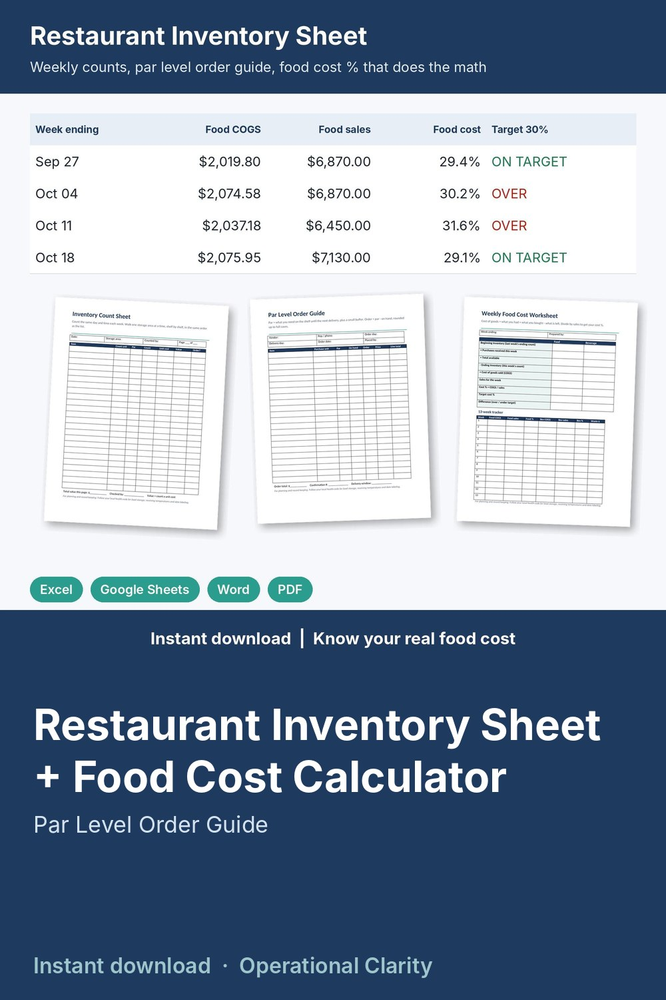

Restaurant Inventory Sheet + Food Cost Calculator

Count your stock in minutes, know exactly what to order, and see your real food cost % every week: a restaurant inventory sheet that does the math, plus printable count sheets for count night.
WHAT'S INSIDE
- Restaurant Inventory & Food Cost Calculator (Excel / Google Sheets, 9 tabs):
* Items & par levels: your order guide with category, storage area, vendor, case size and price, count unit and par. Cost per unit, on hand, value on hand, ORDER flag, cases to order and order cost calculate
* Weekly Counts: up to 13 weeks side by side, latest count and change vs last week, inventory value by week split into food, beverage and supplies
* Purchases: log invoices by category; each one is matched to the right week automatically
* Food Cost: beginning inventory + purchases - ending inventory = cost of goods; food cost % and beverage cost % vs your targets, with OVER / ON TARGET flags
* Waste Log: spoiled, expired or returned items with cost per entry and waste by week and reason
* Order Guide: pick a vendor (or All) and get every item below par with the cases to order and the order total
* Dashboard: inventory value, food and beverage cost % by week with a chart, items below par, cost to order up to par, value by storage area and category, waste by reason
- Printable sheets (Word + PDF, 6 pages): Inventory Count Sheet by storage area, Bar & Beverage Count Sheet (full + open bottles in tenths), Par Level Order Guide, Receiving Log, Weekly Food Cost Worksheet with a 13-week tracker, Waste Log
- START HERE guide (PDF)
HOW IT WORKS
1. Enter each item once with its case size, price and par level.
2. Count the same day each week (on screen or on the printed sheets) and type the counts in.
3. Log invoices and type your weekly food and beverage sales.
4. Your food cost %, beverage cost % and inventory value calculate; the Order Guide shows what to order from each vendor.
Example data (a 35-item cafe, 5 weekly counts) shows how it all connects; delete it and type your own. Yellow cells = type here, green cells = calculated.
FORMATS
- Excel .xlsx (works in Excel and Google Sheets)
- Word .docx (edit in Microsoft Word, Google Docs, Pages or LibreOffice) + PDF, US Letter
This is an instant digital download, no physical item will be shipped.
For planning and record keeping. Follow your local health code for food storage, receiving temperatures and date labeling.